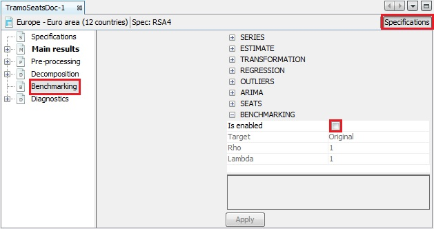
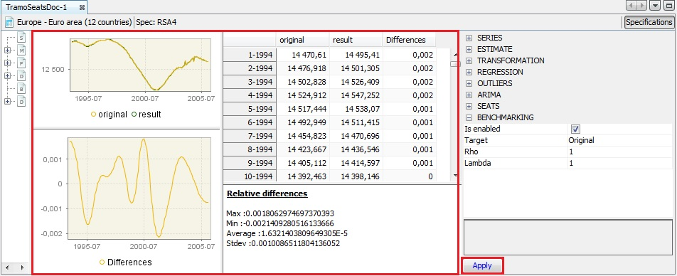
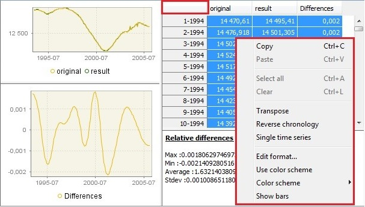
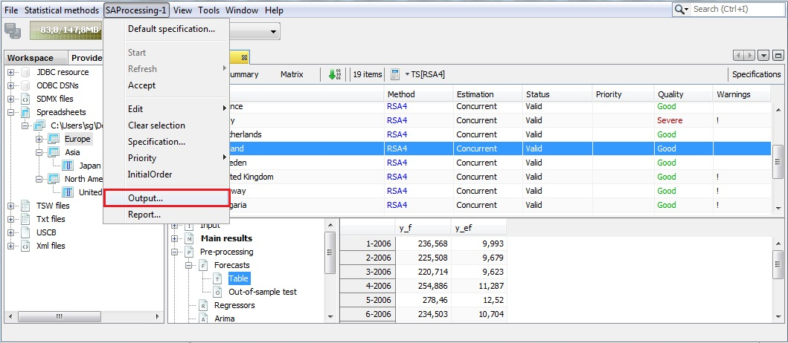
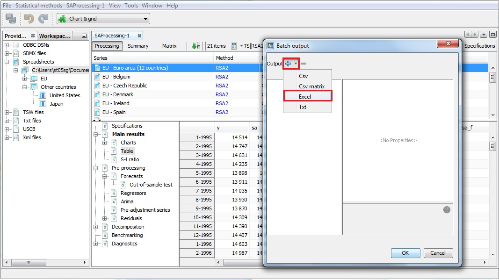
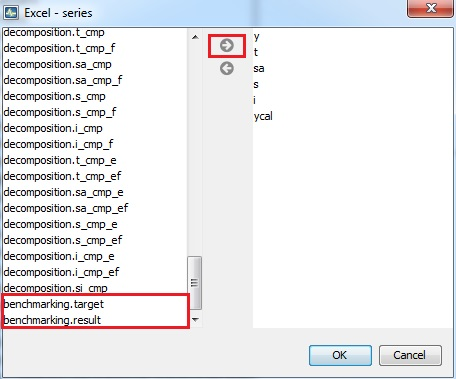

Benchmarking and temporal disagreggation
In this chapter we describe the practical implementation, the underlying theory in a dedicated chapter.(link)
Benchmarking overview
Often one has two (or multiple) datasets of different frequency for the same target variable. Sometimes, however, these data sets are not coherent in the sense that they don’t match up. Benchmarking[^1] is a method to deal with this situation. An aggregate of a higher-frequency measurement variables is not necessarily equal to the corresponding lower-frequency less-aggregated measurement. Moreover, the sources of data may have different reliability levels. Usually, less frequent data are considered more trustworthy as they are based on larger samples and compiled more precisely. The more reliable measurements, hence often the less frequent, will serve as benchmark.
In seasonal adjustment methods benchmarking is the procedure that ensures the consistency over the year between adjusted and non-seasonally adjusted data. It should be noted that the [ESS Guidelines on Seasonal Adjustment (2015)] (https://ec.europa.eu/eurostat/documents/3859598/6830795/KS-GQ-15-001-EN-N.pdf/d8f1e5f5-251b-4a69-93e3-079031b74bd3), do not recommend benchmarking as it introduces a bias in the seasonally adjusted data. The U.S. Census Bureau also points out that “forcing the seasonal adjustment totals to be the same as the original series annual totals can degrade the quality of the seasonal adjustment, especially when the seasonal pattern is undergoing change. It is not natural if trading day adjustment is performed because the aggregate trading day effect over a year is variable and moderately different from zero”[^2]. Nevertheless, some users may need that the annual totals of the seasonally adjusted series match the annual totals of the original, non-seasonally adjusted series[^3].
According to the [ESS Guidelines on Seasonal Adjustment (2015)] (https://ec.europa.eu/eurostat/documents/3859598/6830795/KS-GQ-15-001-EN-N.pdf/d8f1e5f5-251b-4a69-93e3-079031b74bd3), the only benefit of this approach is that there is consistency over the year between adjusted and the non-seasonally adjusted data; this can be of particular interest when low-frequency (e.g. annual) benchmarking figures officially exist (e.g. National Accounts, Balance of Payments, External Trade, etc.) and where users’ needs for time consistency are stronger.
Tools
Benchmarking with GUI
With the pre-defined specifcations the benchmarking functionality is not applied by default following the ESS Guidelines on Seasonal Adjustment (2015) recommendations. It means that once the user has seasonally adjustd the series with a pre-defined specifcation the Benchmarking node is empty. To execute benchmarking click on the Specifications button and activate the checkbox in the Benchmarking section.

Text Benchmarking option – a default view
Three parameters can be set here. Target specifies the target variable for the benchmarking procedure. It can be either the Original (the raw time series) or the Calendar Adjusted (the time series adjusted for calendar effects). Rho is a value of the AR(1) parameter (set between 0 and 1). By default it is set to 1. Finally, Lambda is a parameter that relates to the weights in the regression equation. It is typically equal to 0 (for an additive decomposition), 0.5 (for a proportional decomposition) or 1 (for a multiplicative decomposition). The default value is 1.
To launch the benchmarking procedure click on the Apply button. The results are displayed in four panels. The top-left one compares the original output from the seasonal adjustment procedure with the result from applying a benchmarking to the seasonal adjustment. The bottom-left panel highlights the differences between these two results. The outcomes are also presented in a table in the top-right panel. The relevant statistics concerning relative differences are presented in the bottom-right panel.

Text The results of the benchmarking procedure
Both pictures and the table can be copied the usual way (see the Simple seasonal adjustment of a single time series scenario).

Text Options for benchmarking results
To export the result of the benchmarking procedure (benchmarking.result) and the target data (benchmarking.target) one needs to once execute the seasonal adjustment with benchmarking using the muli-processing option (see the Simple seasonal adjustment of multiple time series scenario. Once the muli-processing is executed, select the Output item from the SAProcessing menu.

Text The SAProcessing menu
Expand the "+" menu and choose an appropriate data format (here Excel has been chosen). It is possible to save the results in TXT, XLS, CSV, and CSV matrix formats. Note that the available content of the output depends on the output type.

Text Exporting data to an Excel file
Chose the output items that refer to the results from the benchmarking procedure, move them to the window on the right and click OK.

Text Exporting the results of the benchmarking procedure
Benchmarking in R
package rjd3bench orga doc - here - in package - example